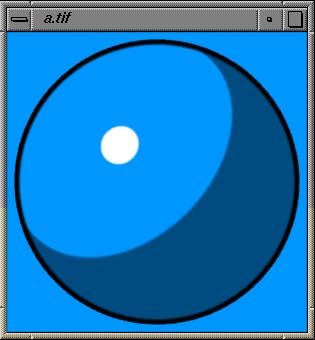
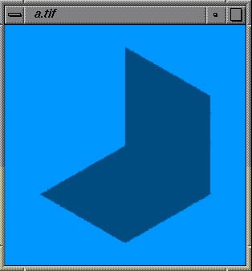
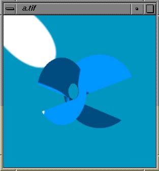
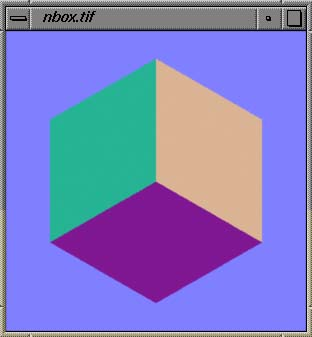
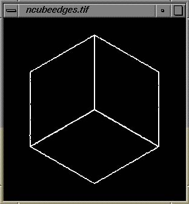
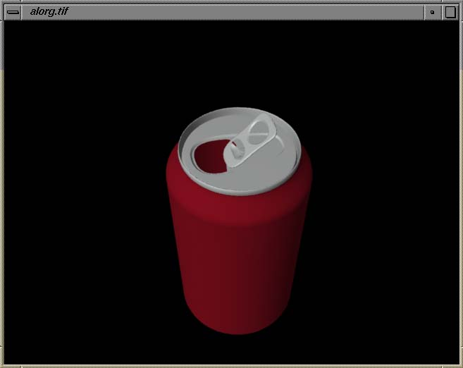
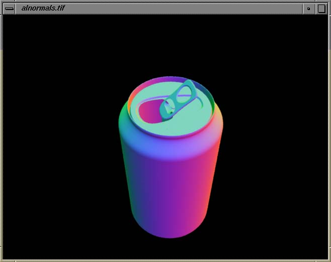
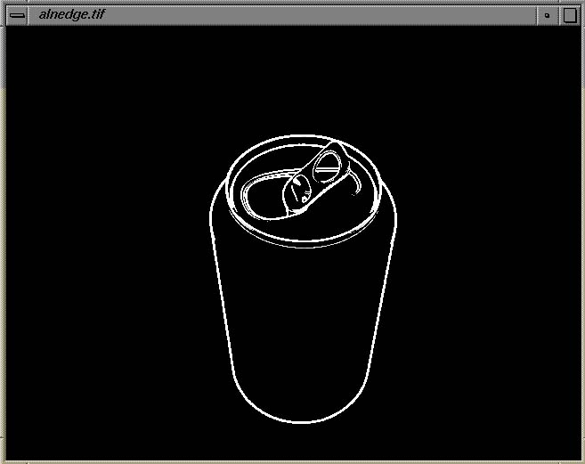

tiffedge [-t threshold] -o tiff_output tiff_input1 [tiff_input2 ...]
-t threshold Threshold value from 0.0 to 1.0 indicating edge.
sensitivity. Default is 1.0.
-o tiff_output TIFF file to write to.
tiff_input1... TIFF files to read from.
Tiffedge is really a little experiment I did in what would be needed to render a cartoon-like image using prman. More filtering code would need to be added for this tool to approach production level output. But the following sections may atleast be of interest to those who have wondered about a "cartoon" or "inker" shader and the problems involved.
At some point everybody working with the RenderMan shading language has atleast thought of a shader that would draw ink around the edges of an object. The easiest technique is to give an object a constant painted color across its surface except where the surface's normal begins to point away from the camera. As the normal points away, the shader uses a rather arbitrary angle at which to start using an ink color.
The end result using this technique can look good on simple geometry, especially if you are willing to spend the time adjusting numbers to maintain a consistent look as the geometry is moved in animation. But as will be seen later, there are cases where this type of shader fails to ink in the expected manner. The following image is of a sphere which is the best example for this type of shader technique. The shader tebSimpleCartoon.sl was used with simplesphere.rib to produce the following simple example:

Because of the sphere's geometry, the thickness of the ink lines can be easily adjusted. But most geometry will have problems with radical variance in the ink thickness. Other more basic problems with the technique are seen when using flat surfaces or surfaces that from the camera's view have edges that are formed because of hills and valleys in the surface. The file simplebox.rib describes an image of a cube with one corner pointing directly into the camera. It is an example of how a simple set of flat surfaces can cause problems. Since the cartoon shader relies on a surface curving away from the camera, the cube does not provide any opportunities for the shader to ink the surface. Only the reflectance model used in the shader shows any variance in the geometry's surface.

Right angles are not the only edges not detected by using the normal to indicate where to ink. The following image has no ink lines added because none of the surfaces gently curve away from the camera's view. The white spot is a highlight on the background that could be removed by repositioning the light source. The file simplequad.rib was used to create the image below.

To get around the problems described above a simple edge detection filter can be used to create the ink lines. An image of the ink lines can then be composited over a rendering of solid painted objects. This compositing could be done after the solid painted image is created or during a final rendering by placing an bilinear surface in front of the camera and using a shader that makes the surface transparent unless an ink line is present.
To detect edges reliably requires that objects be given a reasonable solid color that is different from surrounding objects. The colors are only to distinguish separate objects and do not need to be based on an objects actual color. The following image is of the cube example given above:

To achieve the different colors is a simple matter of many Color statements in the RIB file, but the above image was actually shaded using tebNormalMap.sl. This shader maps the normals of a surface to different colors. The cube example happens to lend itself nicely to it.
Using the command "tiffedge -o ncubeedges.tif nbox.tif" the following image of the edges was created. More filtering would be needed to smooth out some of the lines.




The above geometry was not designed for being "cartooned". But even geometry that lends itself better to edge detection would need more filtering code in tiffedge to produce smooth lines. The above geometry is actually a difficult model to make edge detection look good, but it does show how a complex surface can have its edges outlined whether they are internal to a surface or the joining of two surfaces. Better edge detection can be done by manually setting different surfaces to different arbitrarily assigned colors.
The tiffedge tool can also take Z-file information that was converted over into IEEE TIFF format using z2tiff and "normfptiff -ZeroOutInf". The z-file information tends not to contribute much more in the way of edge detection. The images with separate colors for each geometry or colors for the normals appear to produce the same amount of edge detection in most cases.